USD とは何か、Isaac Sim における役割、制作開始前の基本的な考え方については以下の既存ページにまとめてあります。本報告ではその内容を前提とし、実際の制作プロセスとフォルダ構成に絞って記載します。
USD モデル制作の経験がなかったため、最初から完璧な要件を用意するのではなく、手探りで一歩ずつ進める方式を取りました。
部屋全体（7.3m × 14.2m）と、棚・テーブル・扉・窓の実寸を計測し、色分けしたスケッチとして整理しました。左が AI にそのまま渡した実測スケッチ、右がそこから生成された初版モデルです。
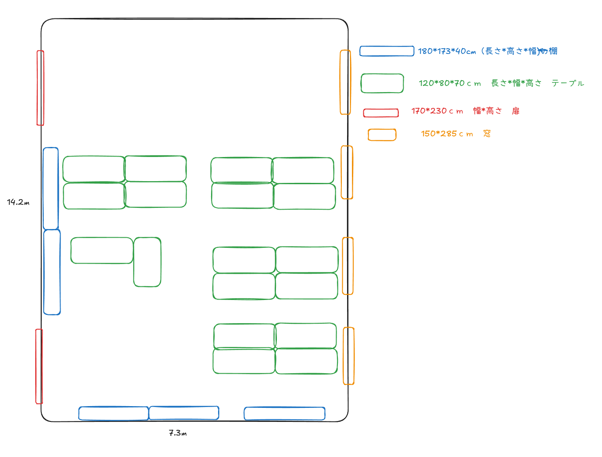
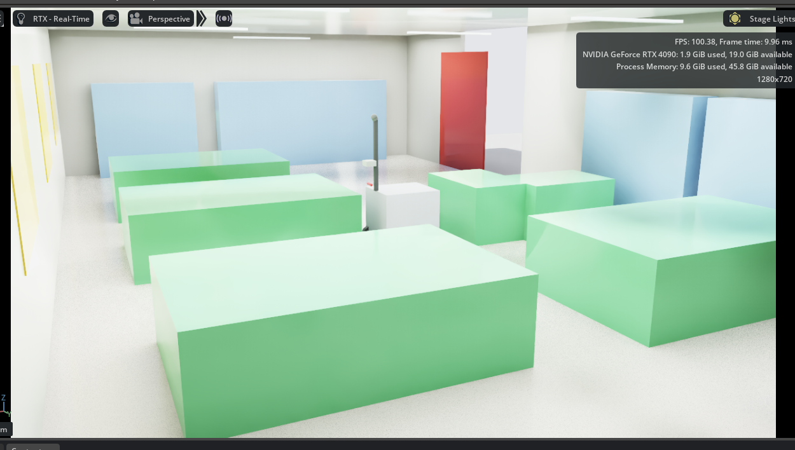
Isaac Sim で実際に使用している USD は、見た目用アセットと衝突用プロキシを分離しつつ、subLayers で1枚のシーンに合成する構成にしています。
scenes/ ├── robot_sim_real_lab.usd # 実行用ルート。ロボット物理層 + real_lab_root を subLayers、LiDAR/IMU/ROS2 Graph を追加 └── real_lab/ ├── real_lab_root.usd # レイヤー合成の起点。座標系の前提・部屋サイズ(7.3×14.2m)を定義 ├── real_lab_materials.usd # 物理マテリアル(床/家具の摩擦)とPBR表示マテリアルの定義 ├── real_lab_structure.usd # 床・天井・壁・窓・扉の開口部・梁やケーブルトレイ(Cube+衝突) ├── real_lab_furniture.usd # 机・棚・什器の衝突プロキシ(Cube)。倉庫ラック(WarehouseStyleRacks)も含む ├── real_lab_asset_refs.usd # 見た目用の実アセット参照(机/椅子/本棚/扉/ソファ/TV台など) └── real_lab_lighting.usd # 天井照明・フィルライト・視認用の発光ストリップ
| ファイル | 役割 | 主な内容 |
|---|---|---|
| real_lab_root.usd | 合成の起点 | 他の5レイヤーを subLayers でまとめる。座標系の前提（X=幅・Y=奥行・Z=上）と部屋サイズをメモとして保持 |
| real_lab_materials.usd | マテリアル定義 | 床・家具用の PhysicsMaterialAPI（摩擦係数）と、扉・すりガラス・倉庫床・発光体などの表示用 PBR マテリアル |
| real_lab_structure.usd | 建屋構造 | 床・天井・4面の壁・窓開口部・扉開口部・トリム・梁・ケーブルトレイを Cube ベースで構築し、PhysicsCollisionAPI を付与 |
| real_lab_furniture.usd | 什器の衝突形状 | テーブル群・棚・倉庫ラックの当たり判定用 Cube。見た目は持たず、位置と物理マテリアルのみを定義 |
| real_lab_asset_refs.usd | 見た目アセット参照 | Isaac Asset Browser / ArchVis / DigitalTwin ライブラリのテーブル・椅子・本棚・扉・ソファ・TV台・倉庫コンテナ等を references で読み込み。オンライン資産が使えない場合でも衝突プロキシだけでナビゲーション/LiDAR テストが継続できる設計 |
| real_lab_lighting.usd | 照明 | ロボットカメラからの視認性を優先した第一版ライティング。DistantLight・DomeLight・天井 RectLight・SphereLight・発光ストリップ(Cube+Emissive)を配置 |
| robot_sim_real_lab.usd | 実行ルート | ロボット物理層と real_lab_root を合成し、Ouster LiDAR・IMU・車輪オドメトリの OmniGraph（ROS2 Publish）と RenderProduct/Replicator を追加した、実際に Isaac Sim 上で開く実行用シーン |
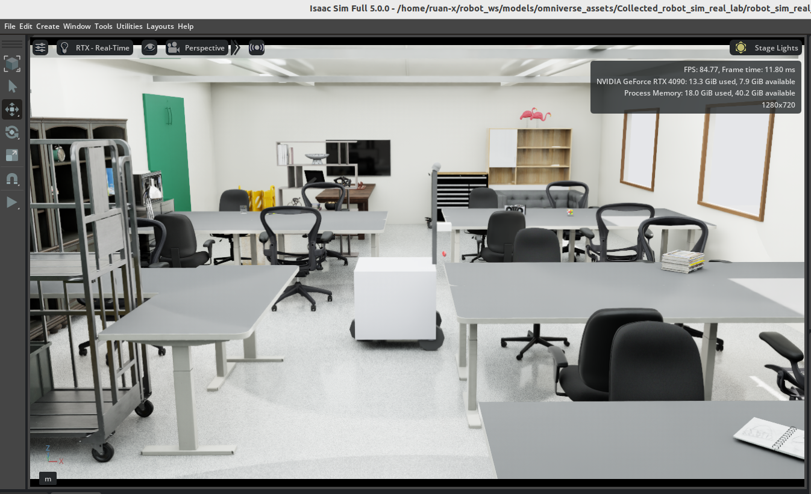
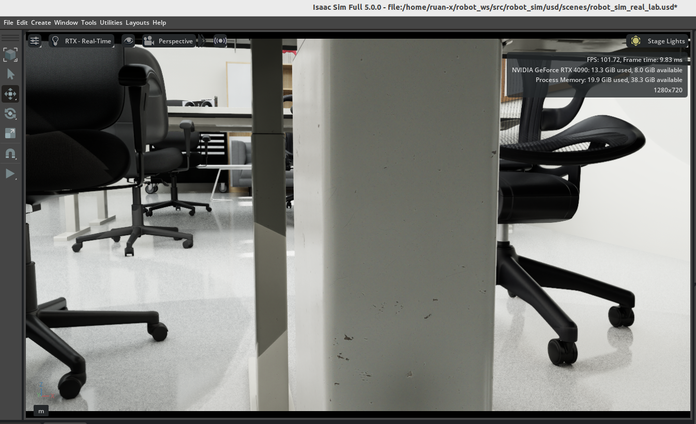
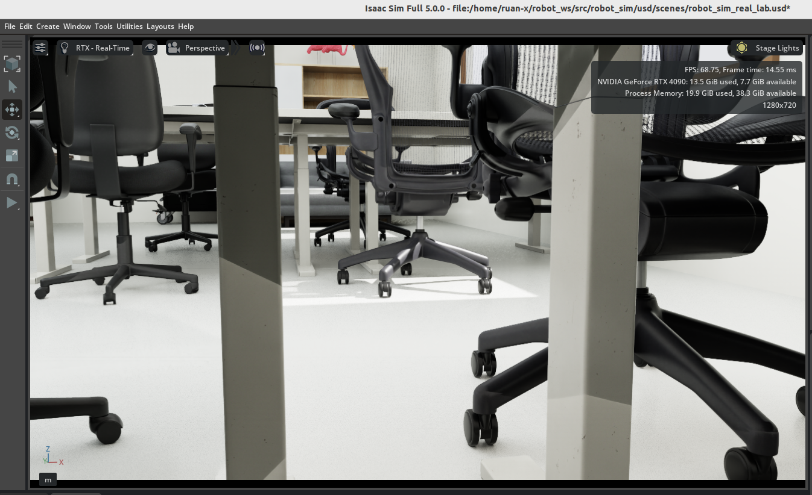
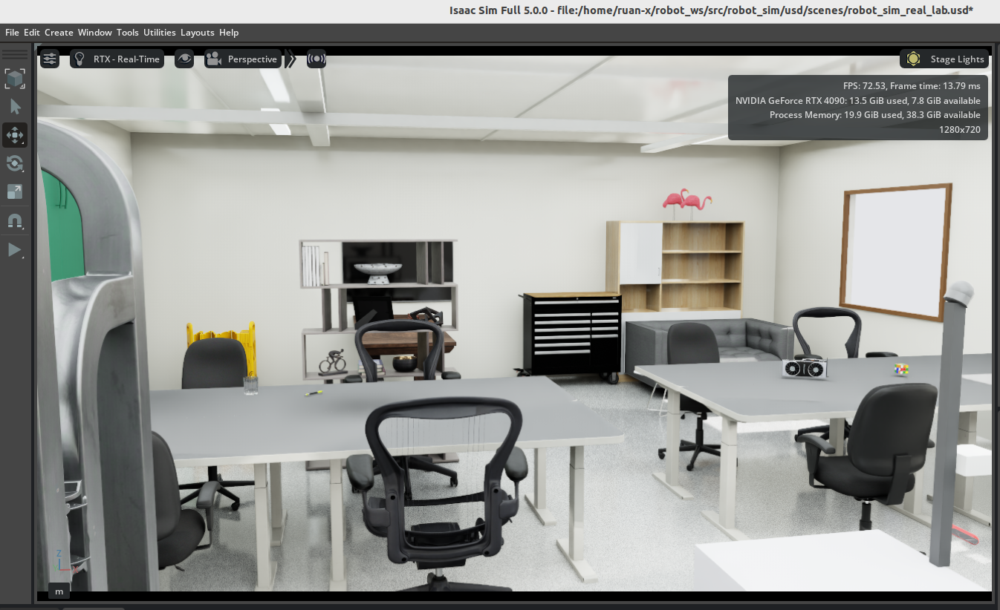
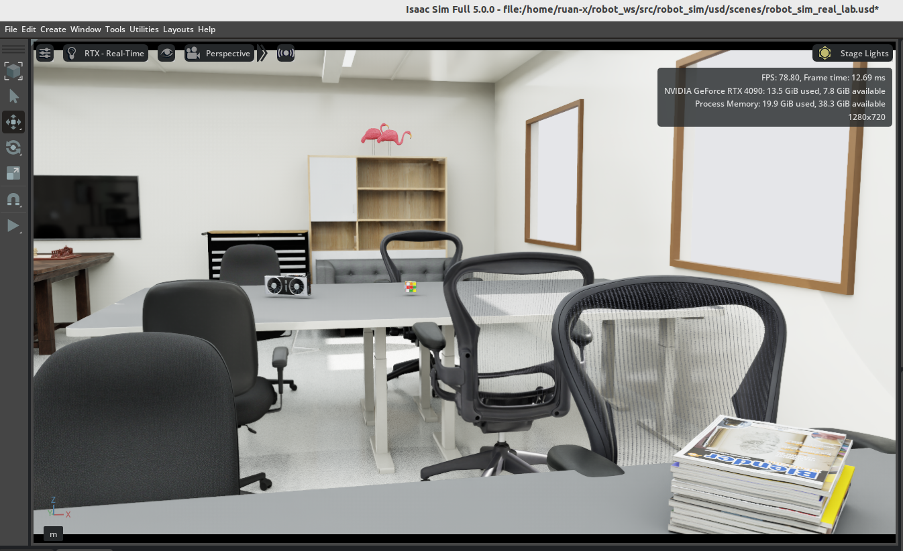
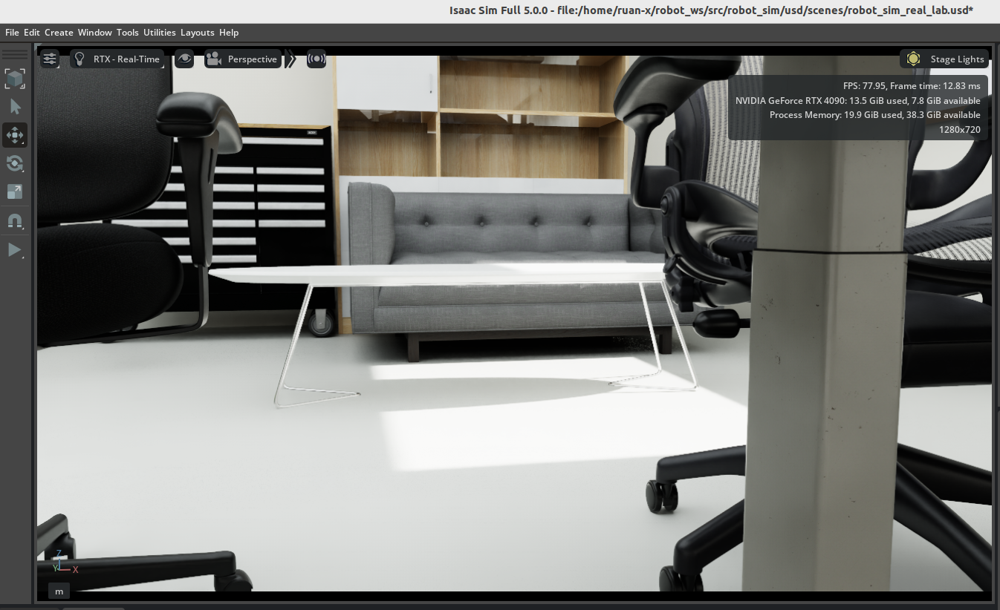
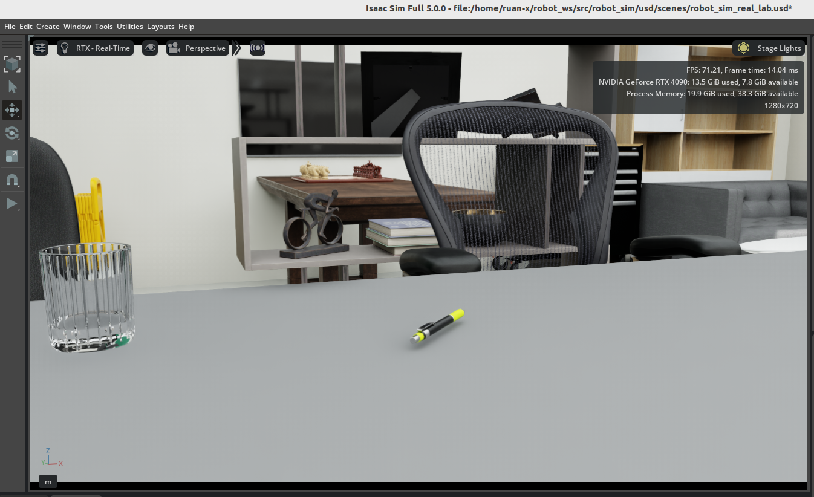
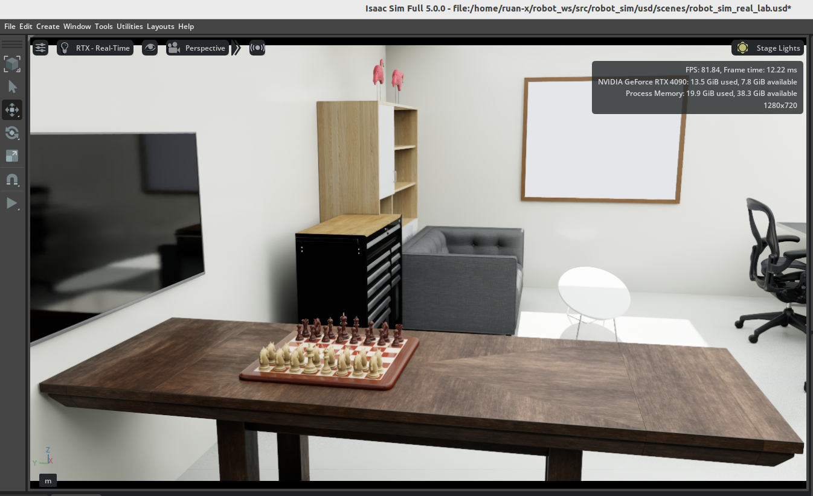
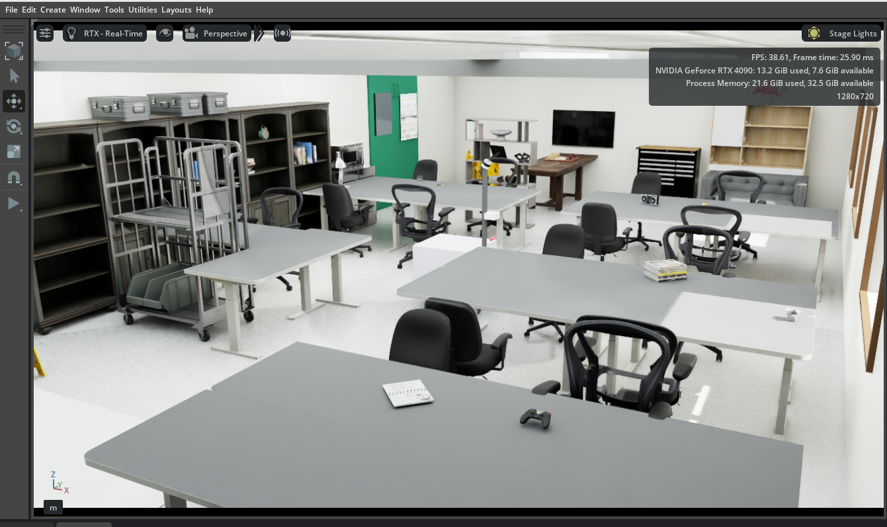
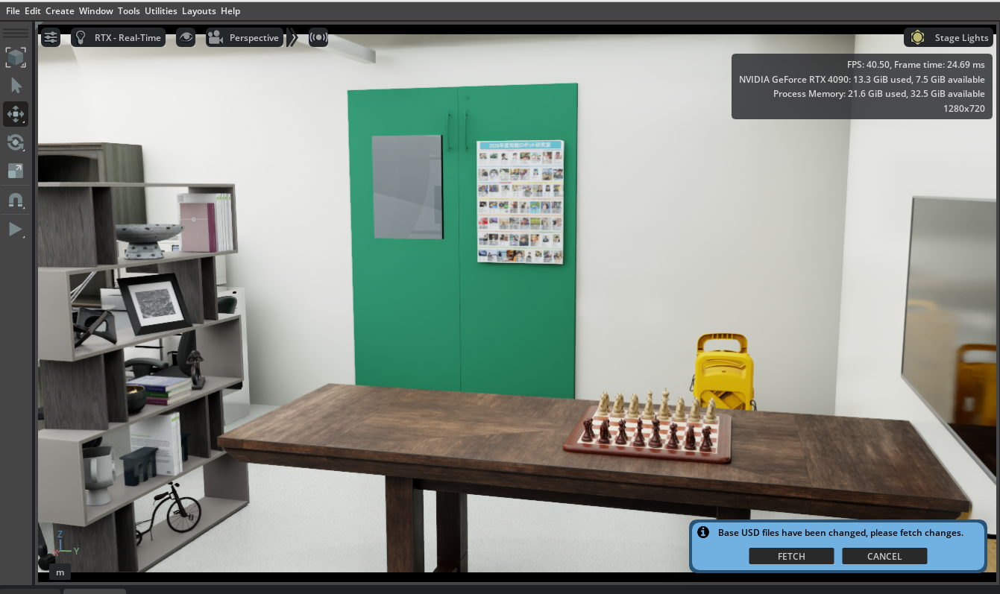
見た目用アセットとは別に定義した衝突用 Cube（PhysicsCollisionAPI）が、実際の家具形状とズレなく重なっているかを確認しました。
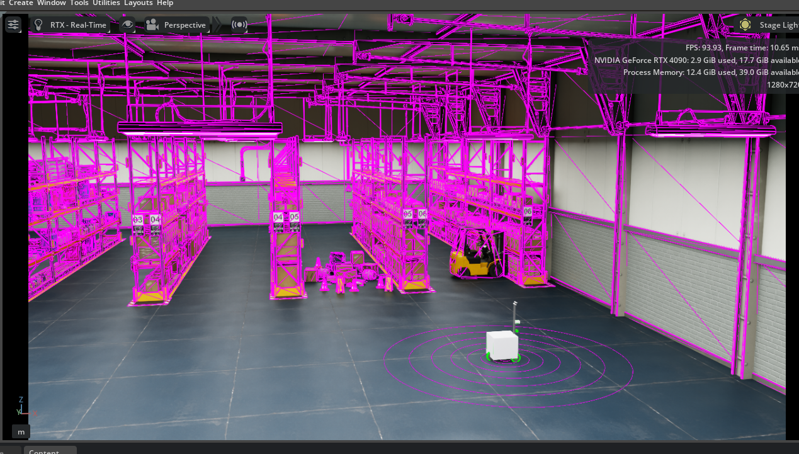
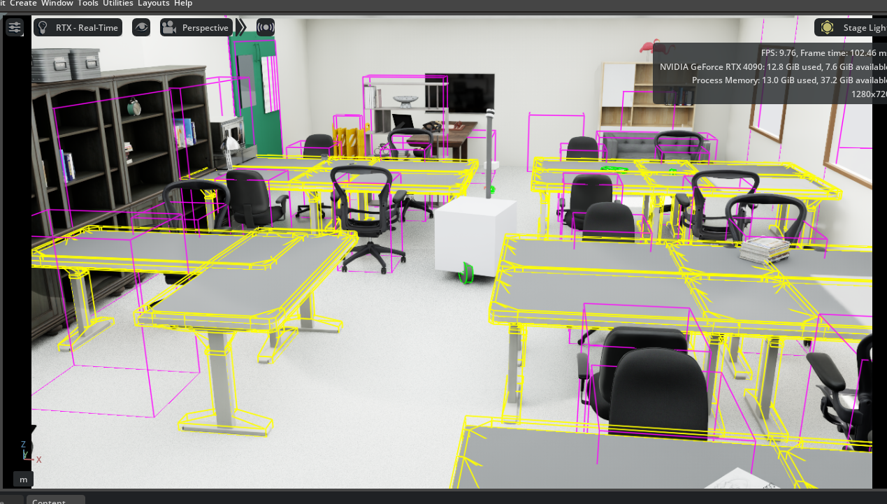
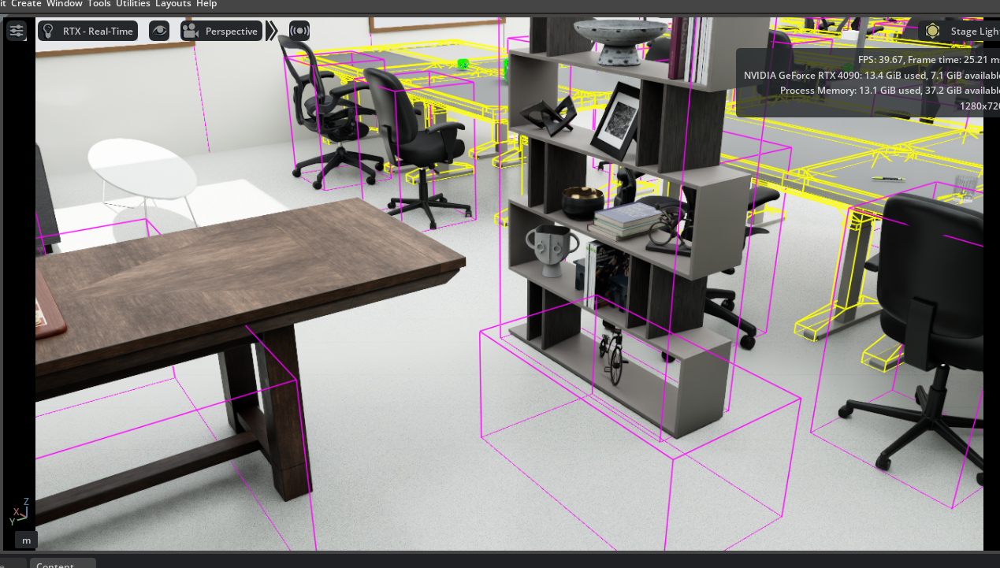
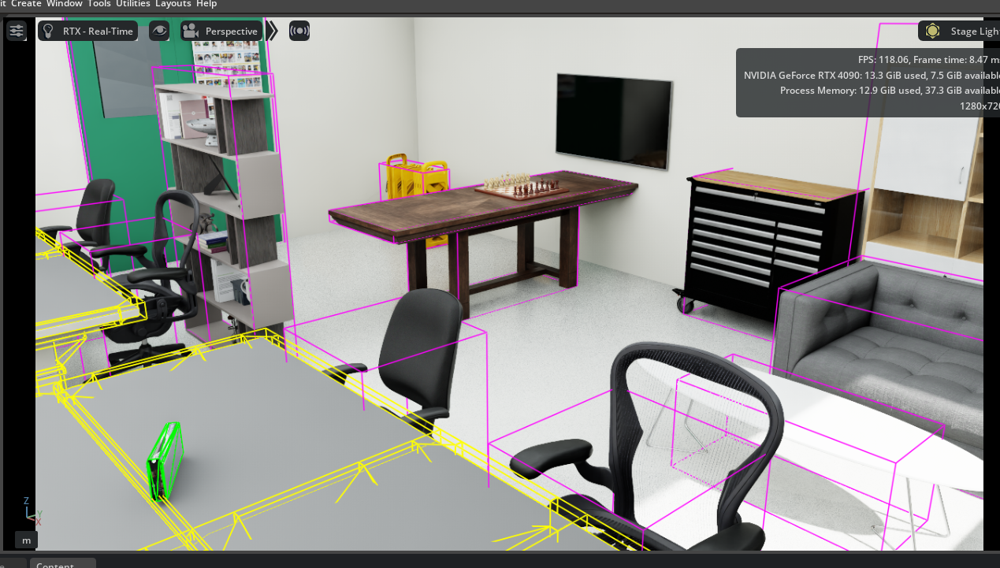
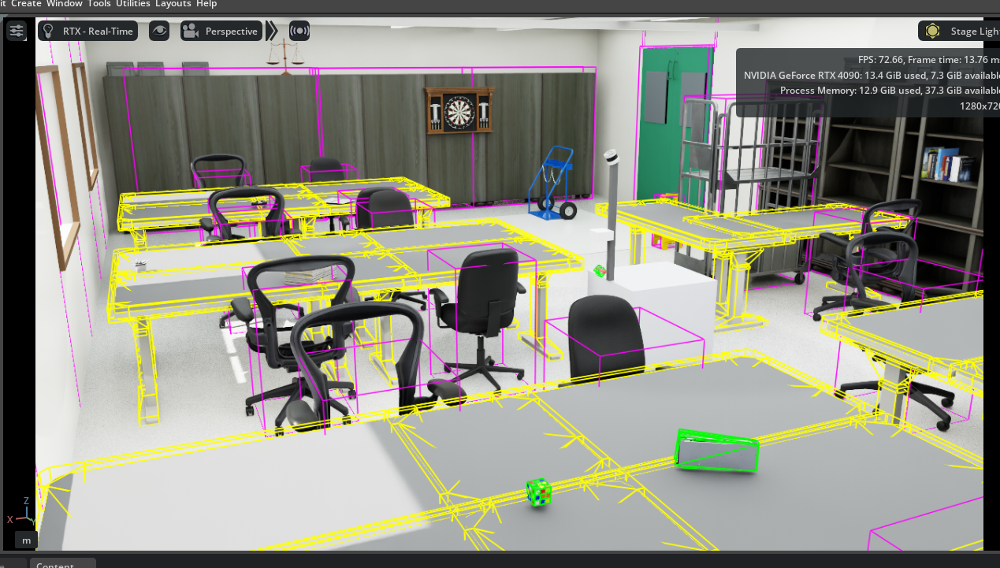
実環境ベースの USD シーンを用意することで、同一のロボットモデルを複数のシーン（デフォルトの倉庫シーンと今回の real_lab シーンなど）で切り替えてテストできるようになりました。
特に、今回のシーンは実際の部屋の寸法をもとに制作しているため、将来的な sim-to-real（シミュレーションから実機への移行）の場面で効果を発揮すると考えています。local planner やナビゲーションの各種パラメータ（例: MPPI）を調整する際に、実寸に基づいた地図の上で検証できるため、
- 通路幅が狭い場所での挙動
- Uターンができない・切り返しが必要な場所での挙動
- MPPI などのパラメータが実際の空間でどう振る舞うか
といった、実機でも起こり得る状況を事前に想定し、シミュレーション上で再現・検証しやすくなる点が大きなメリットです。
- 本シーン上でナビゲーション（FAST-LIO2 + GICP + Nav2）を再実行し、デフォルトシーンとの挙動差を比較
- 通路が狭い箇所・什器が密集する箇所での MPPI パラメータの再検証
- 衝突プロキシの寸法・位置を実測値と再照合し、ズレがあれば修正
- 照明パラメータを視認性優先設定から、より実際の室内に近い明るさへ調整
- 他の実環境（別の部屋・別フロア）への同様の手順の展開を検討